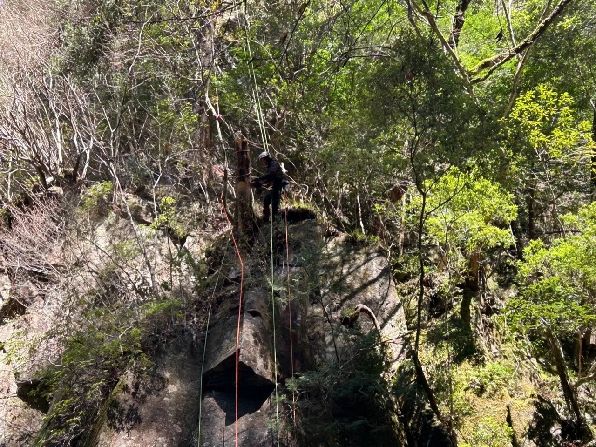
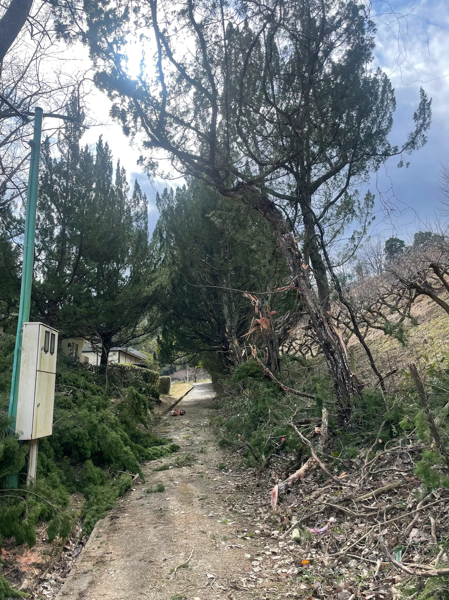
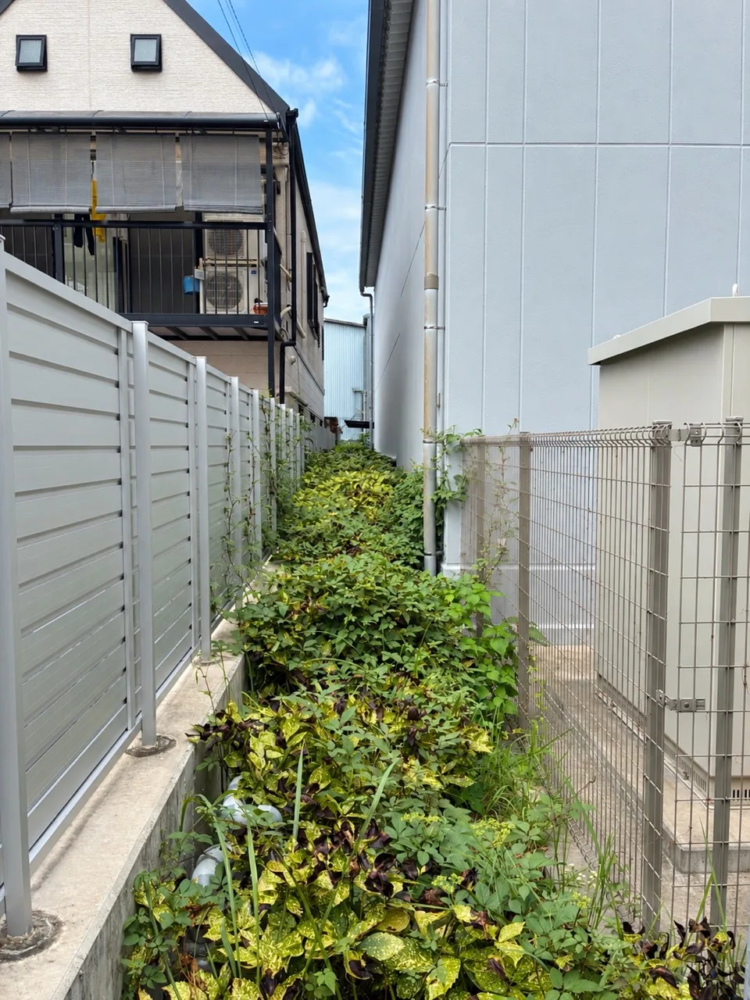

高木伐採
家より高くなった木や、手入れが難しい木。

切ったほうがよいか迷っている木もご相談ください。写真を見て、確認が必要なところをお伝えします。
庭木1本から、高木や斜面の伐採まで対応します。切った木の搬出・処分もあわせてご相談ください。
掲載金額は目安です。搬出・処分や税の扱いを含む総額は、正式見積でご確認ください。
大切にしていること
切る木と残す木、搬出・処分の希望を伺います。金額だけでなく、作業後の状態も確認してから進めます。
木全体と周りの写真から概算をご案内。写真で分からない条件は、現地確認の要否も含めてお伝えします。
伐採、搬出、処分、残したい木。見積の内容をご確認いただいてから、日程を相談します。
屋根や隣家との距離、足場、運び出す経路。木の周りの条件まで見て、作業方法を検討します。
建物の近くの木や山林など、当方が提供した現場写真です。



ページ上部の写真は、岩場の上でロープを使って作業している現場です。写っている作業者は竜樹伐採の本人です。岩肌が露出した場所に木があり、作業位置から下へロープが伸びています。
木の周りには岩場と斜面があり、地面からそのまま手が届く場所ではありません。写真では、ロープを用いて木のそばに作業位置を取っている様子が分かります。
このような場所のご相談では、対象の木だけでなく、斜面の下に何があるか、現場へどう出入りできるかも伺います。ロープを使う方法が適しているかは、木と周辺の状態を確認して判断します。
写真は作業中の様子です。伐採後の状態や搬出・処分の範囲は、この写真だけではお伝えできないため掲載していません。
特殊伐採の方法と見積の確認事項 →上の「山林の作業現場」の写真では、立っている木の手前に重機が入り、切り倒した幹が横たわっています。枝葉も残っている、作業中の現場です。
伐採には、木を切る作業のほかに、枝葉や幹を整理して運び出す作業があります。この写真でも幹や枝葉が現場に残っていることが分かります。伐採と、搬出・処分までを含めた片付けは、見積で範囲を分けて確認します。
切りたい区画、残したい木、車や重機が入れる道を教えてください。重機が使える場所でも、敷地の境界や周辺の状況によって作業方法は変わります。写真の現場と同じ方法・費用で対応できるとは限りません。
山林・斜面の伐採を相談するときは →対応エリア
ご自宅、空き家、管理物件、山林・法面。市町村と写真をお送りください。
奈良市
生駒市 · 大和郡山市 · 天理市 · 桜井市 · 橿原市 · 香芝市 · 王寺町 · 斑鳩町 · 木津川市 · 精華町
大阪・京都・三重・和歌山方面も内容により相談可能です。作業内容と所在地を伺って、対応の可否をご案内します。
高さや本数が正確に分からなくても大丈夫です。木と周りが分かる写真から、順に確認します。
写真だけで概算見積が可能です。木の全体、根元、周辺の建物や電線、搬出経路が分かる写真を送ってください。正式金額は必要に応じて現地確認後にお伝えします。
庭木1本から対応します。高木、危険木、空き家の庭木整理、竹林整理などもご相談ください。
隣家、屋根、電線に近い木や倒れそうな木も状況を確認して対応します。危険度が高い場合は安全な作業方法を確認したうえで見積します。
相談可能です。状況により電力会社への確認が必要な場合があります。写真で木と電線の距離が分かるようにお送りください。
可能です。売却前、管理物件、解体前の庭木整理もご相談ください。庭木の伐採、搬出、処分まで状況に合わせて確認します。
搬出・処分まで対応できます。処分量や搬出距離により費用は変動します。
小雨であれば作業できる場合がありますが、安全に影響する雨風の場合は日程を調整します。
周辺住宅、車両、通行、騒音に配慮して作業します。必要に応じて事前説明も行います。
大丈夫です。金額や作業内容を確認したうえでご判断ください。
奈良市を中心に奈良県内へ対応します。大阪、京都、三重、和歌山方面も内容により相談可能です。
竜樹伐採へ相談
木全体と周りの様子、市町村をお送りください。状況を伺い、概算見積をご案内します。
電話受付の目安：9:00〜17:00ごろ。LINE・メールは24時間受付です。
24時間受付は、すぐの返信や作業対応をお約束するものではありません。
写真は安全な場所から、撮れる範囲で大丈夫です。